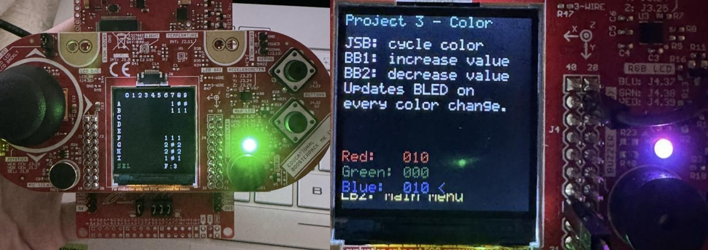
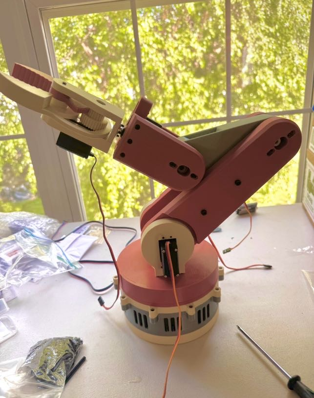

50% engineer.
50% scientist.
100% committed.
Hi, I’m Sydney, a junior at Virginia Tech pursuing dual degrees in Computer Engineering and Computational Neuroscience. My long-term goal is to work on brain-computer interfaces and to push the boundaries of what technology can do for the human brain.
Along the way I’ve gotten into embedded systems, assistive neurotechnology, RF sensing, neuromodulation, space systems, AI, and robotics. (The scenic route, if you will.)
About Me
Built for the intersection of brains and machines.
I’m pursuing dual degrees in Computer Engineering (Machine Learning concentration) and Neuroscience (Computational and Systems) at Virginia Tech. My passion is neural engineering, the software and hardware that let brains and machines communicate.
Outside of engineering: I’m an avid skier and outdoorsy person, a Lego enthusiast, and the author of a children’s STEM book available in Bucks County schools to motivate the next generation of girls into engineering.
Selected Projects
Things I built,
broke, and fixed.
EEG Classifier + PCB Feedback Board
A low-cost embedded BCI practice project that replays prerecorded motor-imagery EEG data on a Raspberry Pi, classifies simple movement states, and displays playback, filtering, confidence, and failsafe status on a custom PCB feedback board.
In progress
MSP432 LaunchPad + BoosterPack Projects
A sequence of embedded systems builds on the MSP432 LaunchPad and BoosterPack, from a full Minesweeper game to interrupt-driven peripherals, PWM color mixing, UART, timers, and joystick input.
Read more
Gesture-Controlled Robotic Arm
A six-axis 3D-printed robotic arm controlled by a wearable sensor glove, transmitting hand gestures over Bluetooth in real time.
Read more
Haptic Feedback System for Robotic-Assisted Surgery
A wearable vibrotactile band that translates force from surgical instruments like forceps into real-time feedback, helping surgeons and students feel pressure they'd otherwise lose. My first Arduino project.
Read more
Dobsonian Telescope
Built a cost-effective Dobsonian reflector from scratch, tube sourced from a junkyard, and used it to measure the orbital period of Io to 98.88% accuracy against NASA’s data.
Read moreRESEARCH + DESIGN TEAMS
Where I spend
my time.
Legon Lab
Undergraduate Researcher under Dr. Legon, investigating LIFU (low-intensity focused ultrasound) to measure neuromodulation in pain circuits. Responsible for EEG data collection, MRI analysis, LIFU preparation, and conducting participant trials.
NASA Payload Sub-Team
Payload Engineer on the design and testing of a LoRa RF payload for the 2025/2026 NASA Student Launch competition, focusing on system integration, structural integrity, and data acquisition. The team qualified and competed at NASA’s Marshall Space Flight Center in Huntsville, Alabama (April 2026), placing 7th in the competition, with the rocket and payload successfully passing NASA’s rigorous design review process.

Assistive Robotics Lab
Designed a vibrotactile feedback system for robotic-assisted eye surgery using a load cell with HX711 amplifier to detect surgical tool force, and developed C++ software on an Arduino UNO to generate real-time vibrational cues.
Get In Touch
Let’s talk engineering.
Always open to conversations about anything at the intersection of tech and health. Feel free to reach out.